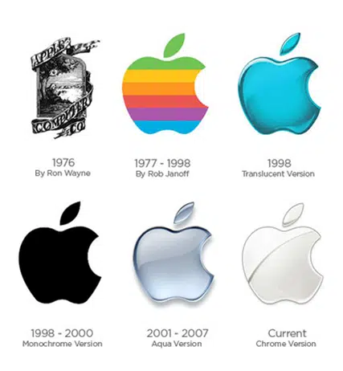

Il détient la principale marque du marché, Apple. Dans son entreprise, il est considéré comme un héros et un modèle pour d'autres entrepreneurs.
Les 4 entreprises étudié ; Apple.
Valeurs premières : ambition et innovation Chez Apple, on vise l’excellence dans tous les domaines. Pour Steve Jobs, « Un produit doit être parfait, ou ne pas être ». Ainsi, chaque employé est investi d’une mission, et même si les candidats se bousculent aux portes de la marque à la pomme, les places sont aussi difficiles à obtenir qu’à garder. En effet, pour pousser l’innovation à son paroxysme, l’idée de Steve Jobs (qui est toujours mise en application aujourd’hui) et se concentrer plus sur la personnalité et le potentiel d’un candidat que sur son CV. Et une fois recruté, ce n’est pas une balade de santé qui commence pour le salarié, Apple est réputé pour savoir remercier assez facilement les éléments qui ne présentent pas d’assez bons résultats ou qui n’ont pas l’air assez efficaces. Ce mode de management « à la dure » garantit à la marque de n’être toujours entouré que par les meilleurs collaborateurs possible. Aussi, l’idée du père fondateur et que l’innovation et l’initiative doit venir de tous. Il déclarait alors : « Ça n’a pas de sens d’embaucher des gens intelligents puis de leur dire quoi faire. Nous embauchons des gens intelligents afin qu’ils puissent nous dire ce qu’il faut faire ».
|  |
Dans cette ambiance de production, on ne peut pas dire qu’Apple se soit laissé tenter par une culture d’entreprise version start-up, ni par une ambiance très travaillée et développée comme chez Google par exemple. Dans les locaux du créateur de l’iPhone, le mot d’ordre… Et bien c’est « travail », tout simplement. Ainsi, même si travailler chez Apple présente bien évidemment de nombreux avantages, l’entreprise n’arrive pour l’année 2019 que 71e au classement Glassdoor. (LinkedIn, Facebook, et Google arrivent respectivement en 6e, 7e, et 8e position.) |
|---|
Ici est steve jobs, principal concurrent de bill gate, cette personne est très importante dans le monde de l’informatique. Il est l’un des fondateurs d'Apple, quand on pense à l'électronique, plus spécialement au téléphone c’est directement son nom qui nous vient en tête.
|
|
Il détient la principale marque du marché, Apple. Dans son entreprise, il est considéré comme un héros et un modèle pour d'autres entrepreneurs. |
|---|